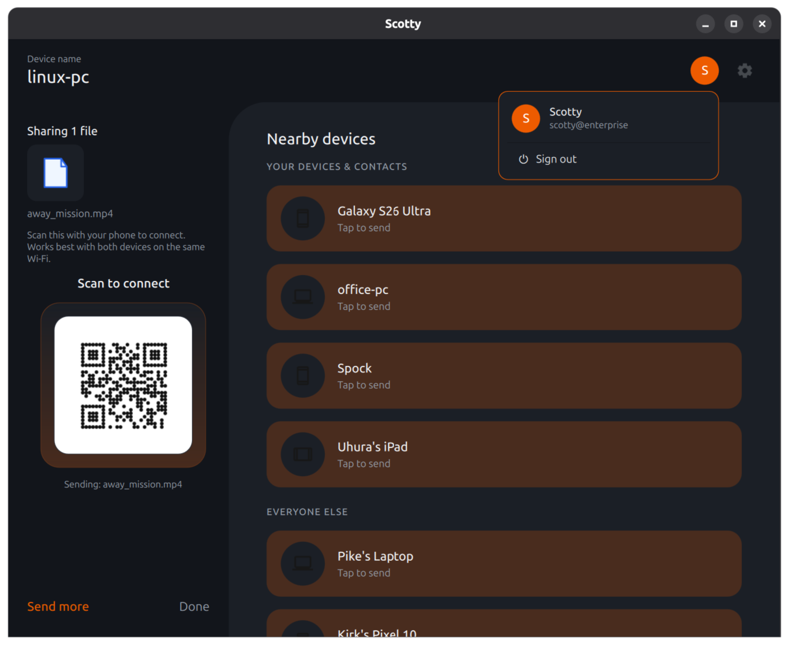
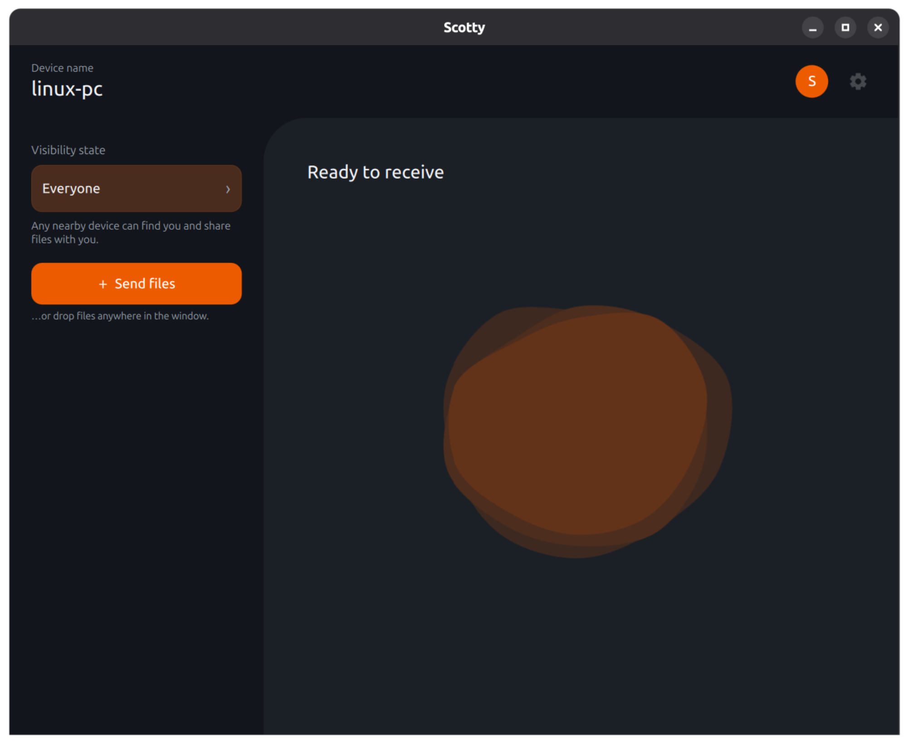
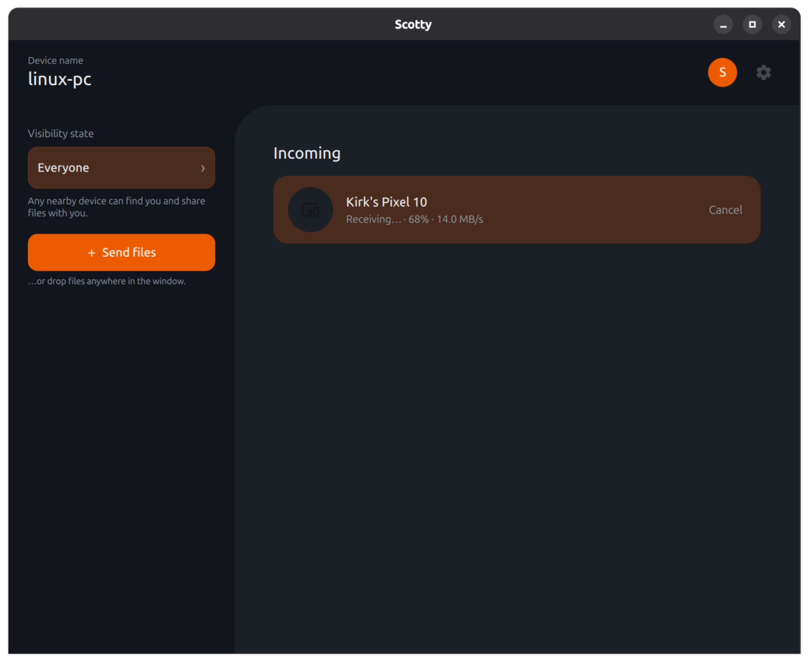

Send files between your Linux PC and nearby Android or ChromeOS devices over Quick Share, the sharing already built into them. No account required, no cloud. And it works even when there is no shared Wi-Fi at all.

Native Qt, in your system tray, themed to match your desktop.


Uses Google's Quick Share protocol, so it talks to the sharing built into every modern Android and ChromeOS device. Nothing to install on the other end.
The one thing no other Linux client does: send when there is no shared Wi-Fi, even with the phone's Wi-Fi switched off. Scotty reaches it over Bluetooth and opens a direct link.
The transfer does not take over your Wi-Fi radio, so your connection keeps working the whole time and returns exactly as it was.
Tucked into the system tray. One click to toggle who can see you, or to accept an incoming transfer the moment it arrives.
Files land even when your screen is locked, with your certificates in place, so you never miss a transfer because you stepped away.
A built-in QR code lets any phone send files straight to you, with no Scotty and no setup needed on the other side.
Off the network, opt into a 5 GHz hotspot link for big transfers: roughly 75 MB/s instead of 20. Off by default; flip it on when you are moving a lot at once.
Scotty reads your system accent colour and light or dark theme from the desktop portal and matches it, so it looks like it belongs, not like a foreign toolkit.
Sign in with Google to send to your own devices without a tap and to see contacts, with your real name and photo. It runs as a separate plugin, so the core app stays completely account-free.
Scotty negotiates the same set of radios Quick Share uses, and upgrades to the fastest link both devices can share, with or without a network in common.
The Flatpak pulls its KDE runtime from Flathub, so set Flathub up first if you have not. New versions then arrive on their own through flatpak update.
| Scotty | Packet | rquickshare | LocalSend | |
|---|---|---|---|---|
| Google Quick Share protocol | Yes | Yes | Yes | No |
| No app needed on the phone | Yes | Yes | Yes | No |
| Works with no shared Wi-Fi | Yes | No | No | No |
| Internet stays up mid-transfer | Yes | No | No | No |
No. Scotty speaks Google Quick Share, the Android and ChromeOS standard. iPhones use AirDrop, a separate protocol, so they are not supported today.
It is built and tested on GNOME (including Ubuntu) and KDE Plasma, but Scotty is a standalone Qt application and runs on any X11 or Wayland based compositor.
On Ubuntu, yes: it ships the AppIndicator extension that GNOME needs for tray icons, so Scotty appears out of the box. On a stock GNOME desktop (for example Fedora Workstation), enable the “AppIndicator and KStatusNotifierItem Support” extension once and the tray icon shows up. KDE Plasma and most other desktops support it natively.
No. Everything (discovery, sending, receiving, off-network transfers) works signed out. Signing in is an optional plugin that adds sending to your own devices with no confirmation tap, contacts, and your real name and photo. It is a separate process, so the core app never touches an account unless you choose to.
No. Transfers happen directly between the two devices over your local radios. Only the optional account plugin, for signing in and syncing your own devices' certificates, talks to Google's servers; every file transfer itself is fully local.
The Flatpak updates automatically through flatpak update and your software centre. The AppImage checks for and installs updates from inside the app.